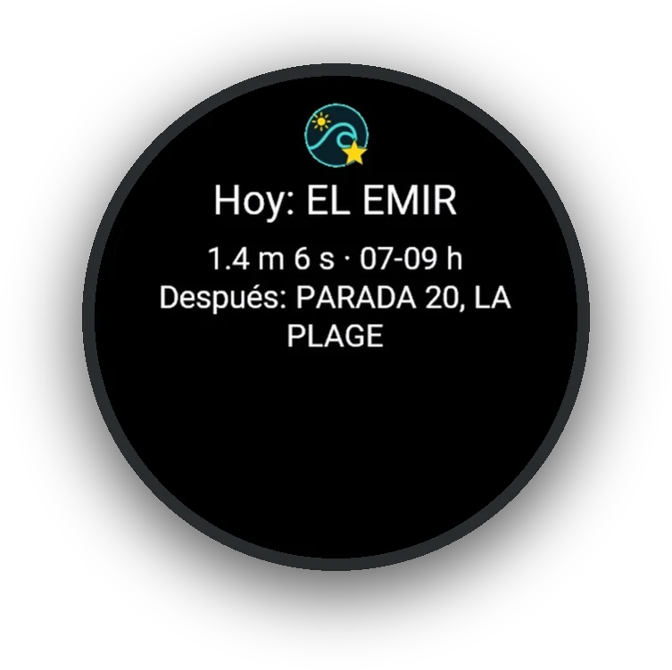
Te despierta el mejor pico
Antes de levantarte, el reloj te dice dónde y a qué hora conviene entrar hoy.
Surf Dawn calcula las mejores horas de tu pico con las olas, el viento y la marea, te avisa a la mañana dónde ir, y en el agua cuenta cada ola que agarrás.
Del aviso de la mañana a tus olas en el mapa: cada app hace una parte, y juntas no te dejan perder una buena sesión.

Antes de levantarte, el reloj te dice dónde y a qué hora conviene entrar hoy.
Las olas, el viento y la marea de tu pico en la esfera, sin abrir el teléfono.
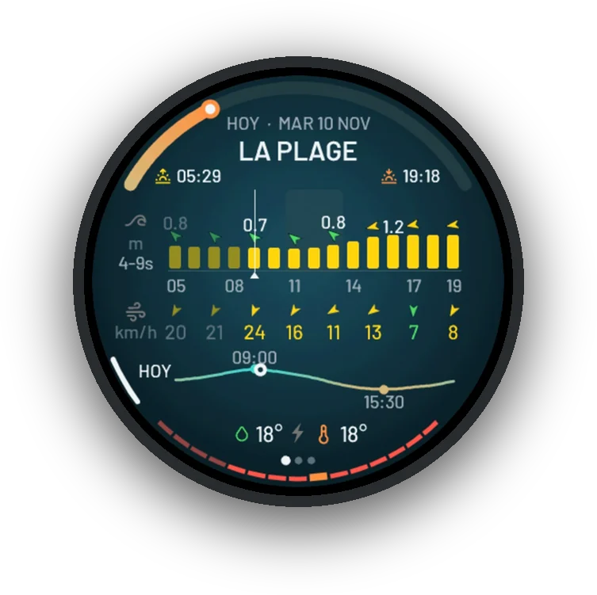
El día hora por hora, en verde, amarillo o rojo, con las mejores horas marcadas.
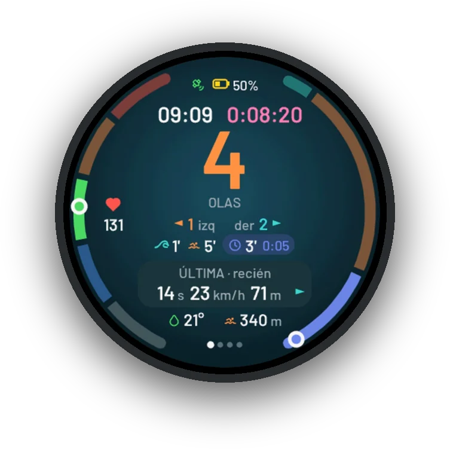
Sesión cuenta tus olas sola. Si la corriente te aleja, te avisa, y la brújula te lleva de vuelta al take-off.
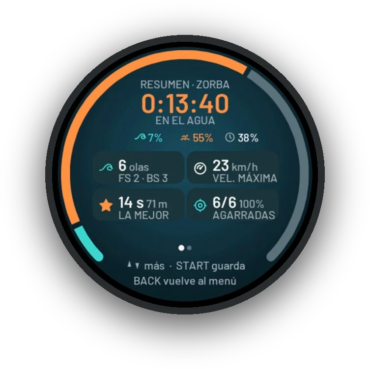
Cuántas olas, la mejor, la velocidad máxima. Todo queda en Garmin Connect.
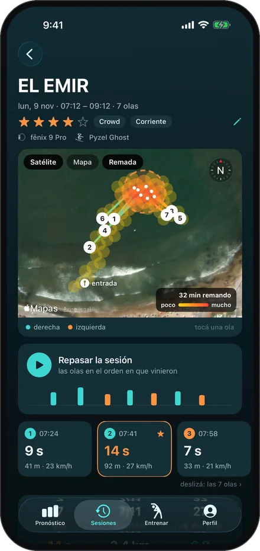
En el iPhone, cada ola sobre el satélite, dónde remaste y las fotos de ese día.
Deslizá para ver el día →
Hecho por surfistas, en Uruguay.
Uruguay · foto @vistalestePara cada hora, Surf Dawn junta el tamaño y el período de las olas, el viento y cómo le entra el swell a tu playa. A vos te queda una sola cosa para mirar: el color.
Olas con tamaño y período, y el viento a favor.
Se puede surfear, pero algo no acompaña.
Muy chico, muy picado o el viento del mar.
Cada zona, su escala. Lo grande depende de dónde surfeás: 2 m es un día enorme en Uruguay y uno normal en Nazaré. Por eso el verde de tu pico sale de un año de olas en tu zona.
Instalá las que quieras: cada una anda sola, y juntas te acompañan desde que mirás el reloj hasta que salís del agua.
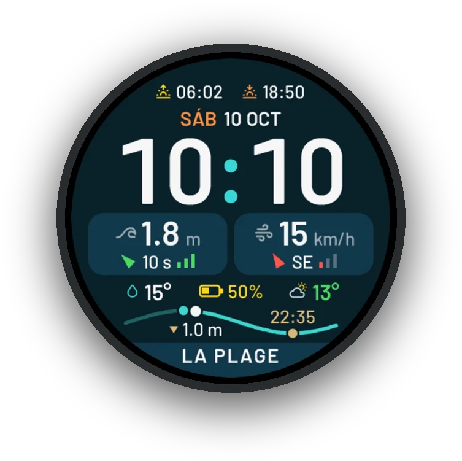
Sabé si hay olas antes de ver el mar. Analógica o digital, con cuatro fondos.
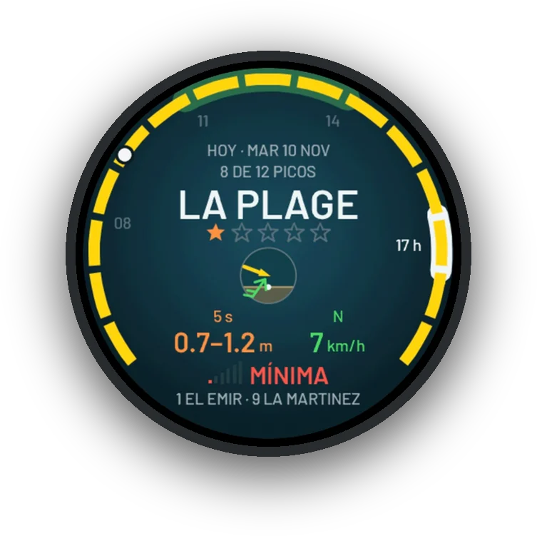
Tu día de surf hora por hora, sin revisar tres apps en el teléfono. Y a la mañana, el mejor pico cerca.
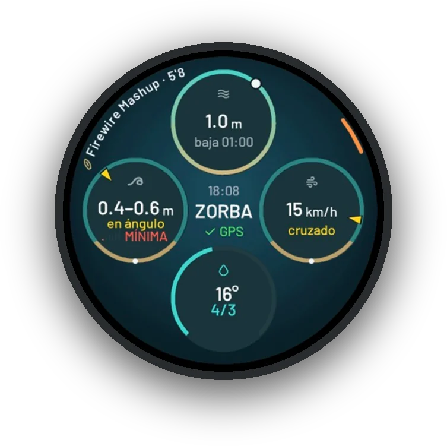
123456Abrís Sesión en la playa y ves tu pico en este momento, y si el reloj está listo para grabar.
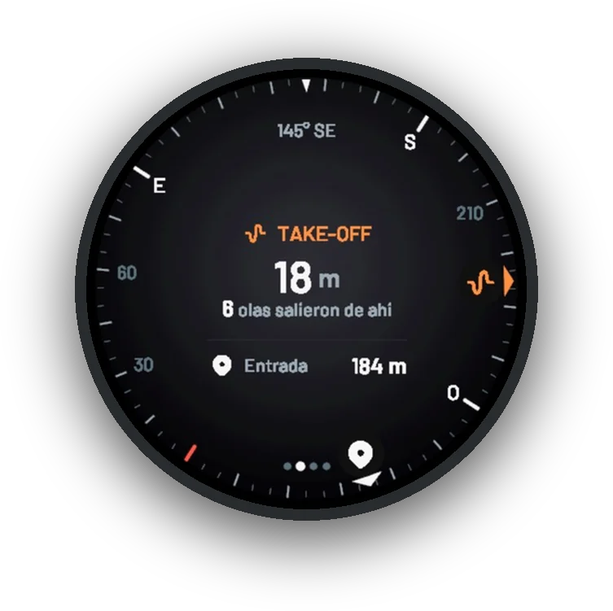
6Graba tu sesión, cuenta tus olas sola y te lleva de vuelta al take-off. Vos solo surfeás.
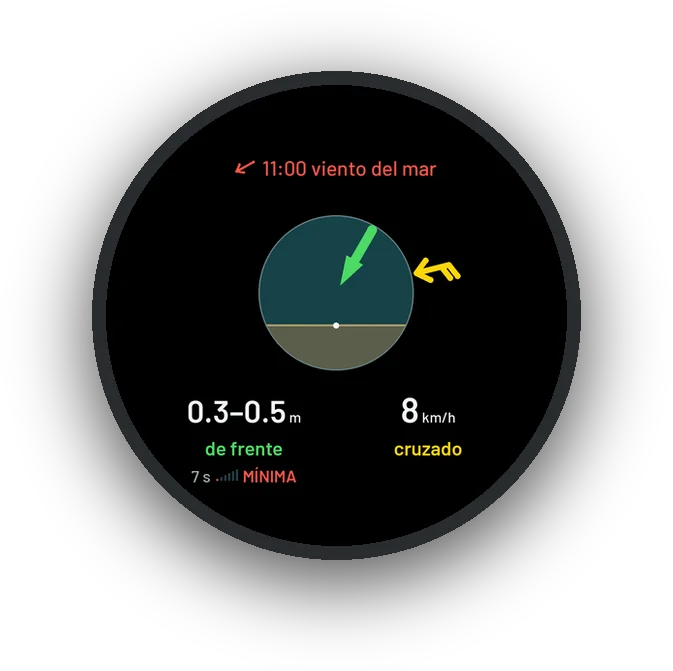
Campo de datos¿Terral o del mar? Miralo en el agua: las olas y el viento de ahora dentro de tu actividad. En el Surf de Garmin, también cuenta tus olas.
Instalar en Connect IQ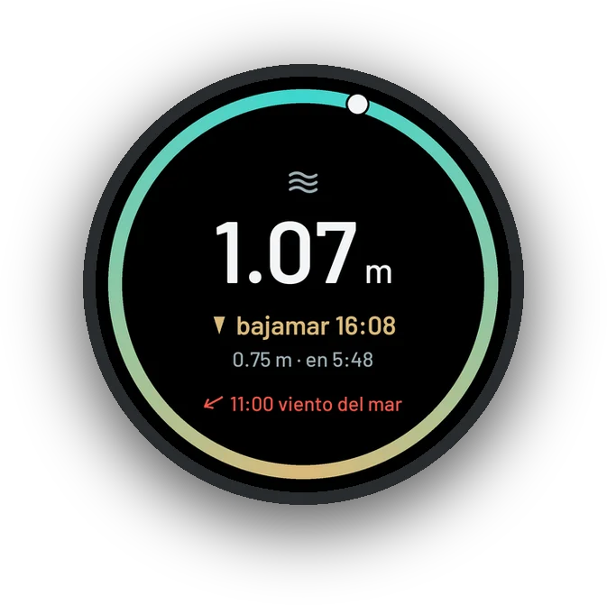
Campo de datosCuánto falta para la bajamar, sin salir de tu sesión de surf, SUP o natación.
Instalar en Connect IQ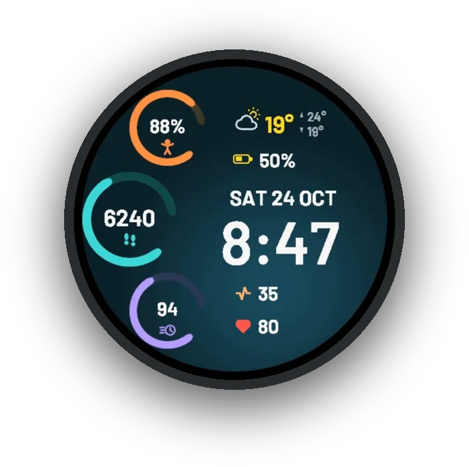
EsferaPara los días sin olas: Body Battery, pasos y minutos de intensidad en tres anillos.
Instalar en Connect IQLa esfera, Pronóstico y Sesión andan en 50 Garmin redondos de 5 botones (fēnix, epix, Forerunner y otros). Anillos y los campos de datos, en casi 100 relojes.
Tu próxima buena sesión ya está en el pronóstico.
Uruguay · foto @vistalesteLa app de iPhone junta tus sesiones del Apple Watch y de tu Garmin, y trae adentro la app del Apple Watch.
Cada pico, siete días, y otros para descubrir
Las de tu carrete, junto a sus olas
Y cuándo surfeás mejor
Rutinas antes y después del agua, y apnea
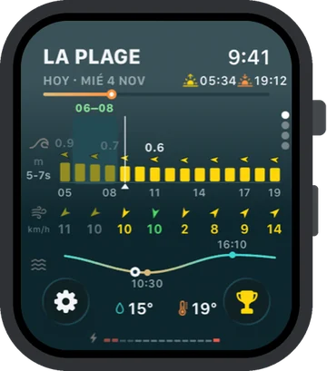
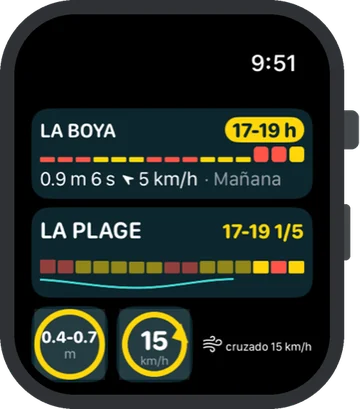
Pronóstico, Hoy y el aviso de la mañana, con complicaciones y el Smart Stack. Sesión cuenta tus olas y la guarda en Salud. Y Entrenar, sin el teléfono.
iPhone con iOS 17 o más; Apple Watch con watchOS 10 o más.
Tres rutinas cortas: una antes de salir, una al volver y la apnea. El reloj o el iPhone te llevan ejercicio por ejercicio, con una figura que hace cada movimiento.
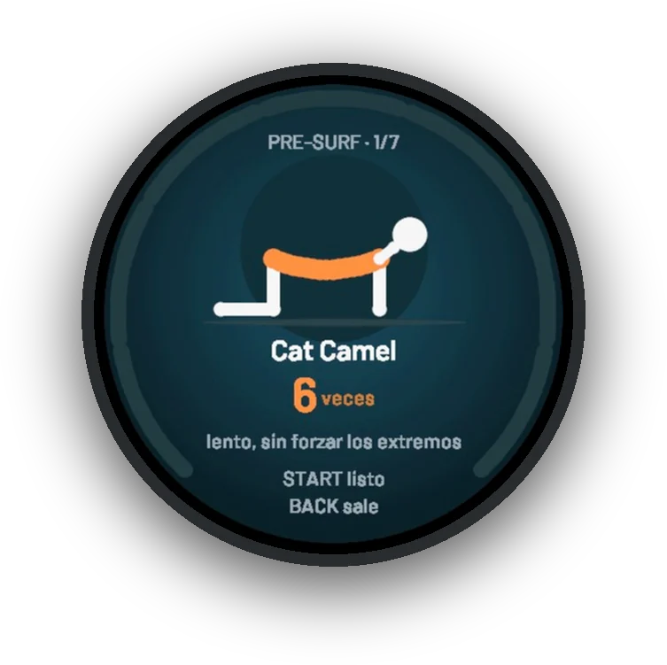
Siete ejercicios de movimiento, no estiramientos largos: Cat Camel, Bird Dog, estocada con giro, círculos de brazos, talones, sentadilla en tu postura y pop-up.
Entrar caliente, con la cadera, la espalda alta y los hombros despiertos y el pop-up ensayado: la primera ola no te agarra frío.
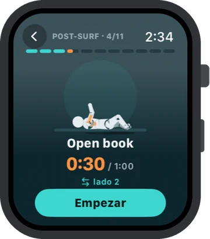
Once ejercicios, casi todos estiramientos suaves y sin rebotar: pecho, dorsales, espalda alta, cadera, piernas y cuello. Termina con un minuto de respiración lenta: inhalar 4 segundos, exhalar 6.
Devolver lo que acorta la remada (pecho, dorsales y cadera) y bajar las pulsaciones. Cuida la espalda: la lumbar no se estira, se mueve suave.
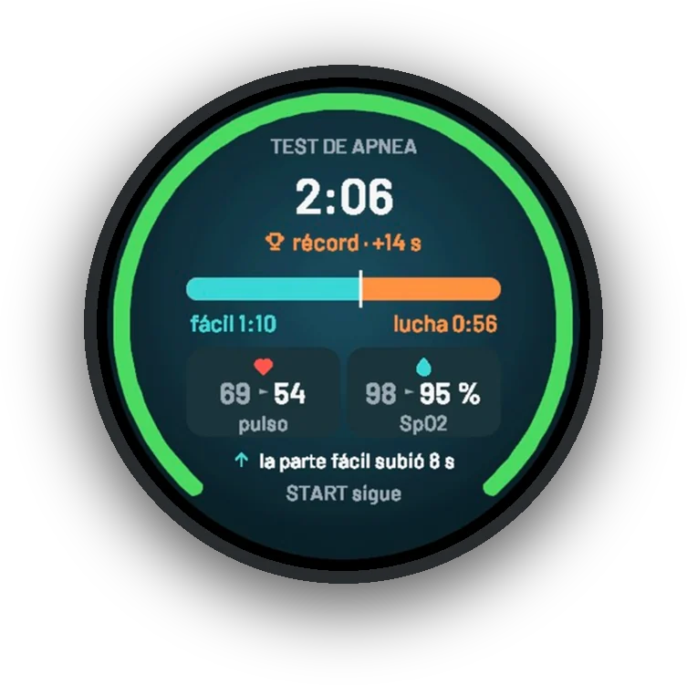
El test mide tu récord y tu parte fácil: lo que aguantás hasta la primera contracción del diafragma. La Tabla CO2 encadena retenciones cortas con descansos cada vez más cortos; la O2, retenciones que crecen hasta cerca de tu récord.
Acostumbrarte a las ganas de respirar, para aguantar tranquilo una revolcada larga (CO2) o quedarte abajo de una serie (O2). Test a test, la parte fácil crece.
La apnea, nunca en el agua ni manejando. Una retención larga puede terminar en un desmayo sin aviso. Sentado o acostado, mejor con alguien cerca, y sin hiperventilar antes: no da más aire y hace más probable el desmayo.
En el iPhone, cada ejercicio explicado: cómo se hace y para qué sirve en el agua
El iPhone te recuerda el Pre-surf 20 minutos antes de la mejor hora del mejor pico
Las tablas salen de tu récord y se ajustan a cómo te fue en la última
En Sesión de Garmin, en el Apple Watch y en el iPhone; queda en Garmin Connect o en Salud
La esfera, Pronóstico, Sesión y los campos de datos
La semana de tus picos y todas tus sesiones, de cualquier reloj
Pronóstico, Sesión y Entrenar en una sola app
Menos teléfono. Más olas.
Uruguay · foto @vistalesteNada. Todas las apps son gratis, sin publicidad y sin cuentas, en memoria de Gonzalo Moratorio. Si te sirve, pronto vas a poder invitar un café desde la app de iPhone.
Un Garmin redondo de 5 botones (fēnix, epix, Forerunner y otros) para la esfera, Pronóstico y Sesión; Anillos y los campos de datos andan en casi 100 relojes Garmin. O un Apple Watch con watchOS 10 y un iPhone con iOS 17.
Con un Garmin, sí: las apps del reloj andan con Android o con iPhone, porque hablan con la app Garmin Connect del teléfono. La app de iPhone y la del Apple Watch, en cambio, son solo de Apple.
No. Pronóstico y Sesión se abren desde cualquier esfera, y el glance de Pronóstico te deja a la vista el mejor pico del día. Además, Pronóstico pone tres complicaciones de tu pico (las mejores horas, las olas y el viento de ahora) y Sesión dos (tu última sesión y tu mejor ventana) en Face It y en las esferas de Connect IQ que las aceptan; las esferas de Garmin no muestran complicaciones de otras apps.
Hay más de 2.500 picos en 63 países, y la app elige sola el más cercano. Si falta el tuyo, avisanos desde Soporte y lo sumamos.
Las olas, el viento y el tiempo vienen de Open-Meteo, con los modelos de olas que mejor andan en cada zona; las mareas, de las tablas de cada puerto.
No. El reloj baja el pronóstico antes, y en el agua anda solo: Sesión graba con el GPS del reloj.
Quedan en tu reloj, tu iPhone y tu propio iCloud. No tenemos servidores ni cuentas. Privacidad
Buscá «Surf Dawn» en la app Connect IQ del teléfono, o entrá directo:
Una sola app, con la del Apple Watch adentro.
iPhone con iOS 17 o más; Apple Watch con watchOS 10 o más.
Surf Dawn es gratis en su memoria.
Hecho en Uruguay por surfistas. Si te sirve para agarrar mejores olas, dejá una reseña en la tienda y pasáselo a quien surfea con vos.
Uruguay · foto @vistaleste